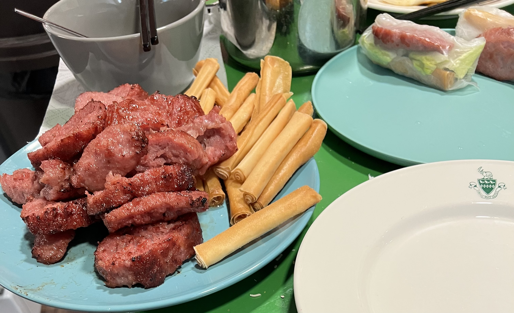

My World of Cooking
Since childhood, I've always observed how my parents cooked traditional Vietnamese dishes: the way they would toss the ingredients together, the delightful smell that would fill the house, and especially the unforgettable taste! From these observations and from my parents' teachings, I developed a love for cooking (especially traditional Vietnamese dishes) and was always excited to make them with my own little twists. Now that I am in college out-of-state, I may no longer have a physical connection to home, but through the opportunity to cook these dishes, I maintain a sort of spiritual connection to home.
Pictured below is an intermediate progress photo of me making Nem Nướng Cuốn, a traditional Vietnamese pork spring roll dish. Though not perfect, I am proud of the progress I have made as a home cook, and will continue to pursue cooking as a hobby.
